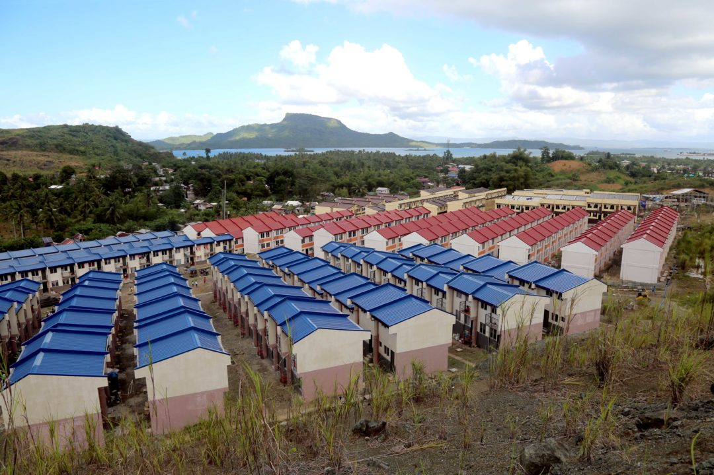
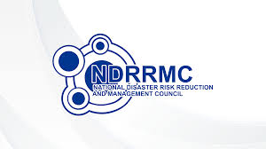

Home
About SDG 11
Challenges
Solutions
Case Studies
Smart Cities
Urban Mobility
Affordable Housing
Green Spaces
Disaster Resilience
Get Involved
SDG 11 Targets
Progress & Statistics
Resources
Contact
Disaster Resilience
Understand how Philippine cities prepare for and recover from natural disasters to build resilience.
Proving Disaster Resilience in the Philippines
Disaster Resilience Articles

Yolanda Recovery & Rehabilitation: Lessons Learned

National Disaster Risk Reduction and Management Programs